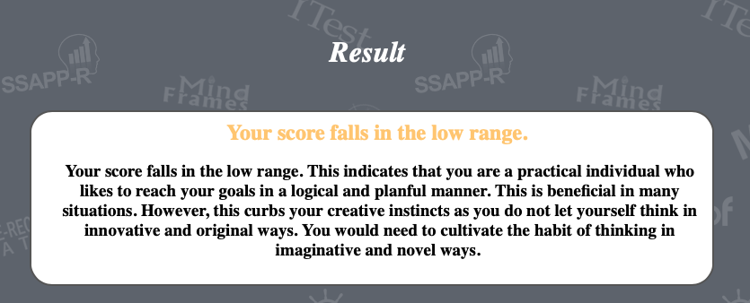
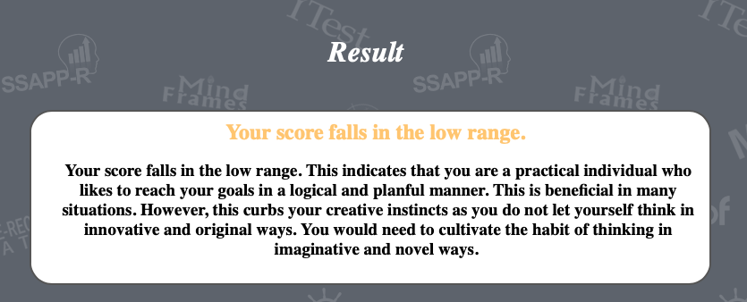

Overview
This game is an Open-world RPG game. One of most famous games of this type is Monster Hunter. The game will proceed according to the story, every screen is carefully designed, the visual sense and the game core game-play is the core of the game pursuit. The Core game-play in this game is Online, Open-world, MMO game. The background story of this game is talking about GongKu. It still includes Western fairy tales.
Motivation
When I was a kid, I wanted to create a game which is belong to me. As well as, I wanted to this game can be popular and unique. I love to play computer games, so I played a lot of games and made friends with people who love to play games. Plenty of game-players love to playing RPG games such as Dark soul and Sekiro.
And Open-world is a very popular game type. Therefore, I want to make a game that includes Open-world and RPG those two modes. Why did I choose GongKu to be main character? I believe all of children in China whose hero is GongKu. So I chose GongKu to be the game’s main character and I hope game-players could love him.
Description
The Background of the story is that in the process of learning lessons, GongKu accidentally crossed into a completely strange new world, which was full of demons and ghosts. GongKu needed to find his way home, but he did not expect to fall into a huge conspiracy. Although GongKu is a main character in this game, you can choose other character if you want to.
For example, you choose BaJie and SanZang. Different character have their own special ability. The game has some features, such as RPG and Open-world. Firstly, RPG is one of the features in this game. RPG are game modes in which characters grow stronger and stronger based on the equipment they drop as they kill different bosses.
Therefore, when playing this game, players can experience the pleasure of equipment matching and skill matching. Secondly, Open-World is one of the most popular game-type in the world. For example, Some of the most popular games on the market are the Legend of Zelda, Minecraft, etc., which are all open world games.
Open world, as the name suggests, is a free and open world, the player can explore the world freely, but it also means that there is a lot of danger in this world, there are also many stories. Thirdly, visuals are also a big feature of the game. Visual effect is also a major feature of this game, the use of unreal 4 engine to do the game, the biggest feature is a special good picture.
The biggest feature of the game is the ability to play online. That is to say, there are other people in the world as well, so there are both opportunities and dangers. Sometimes the danger is not only the NPC, but also the player.
Tools and Technologies
Hardware: Develop this games, people should care about their computer. Firstly, people have a better CPU such as I7 or I9 with Gen 7 or higher. Then, if people want to develop a game has nice visual, they should have a nice graphic card. A good graphic card can present the picture more clearly and nicely.
Then you should have a high capacity hard disk and memory because when you are doing your project, you need to save plenty of data of games or system.
Software: Java is basic program in this games. Then, This game should be created by Unreal Engine 4, and And master a variety of rendering techniques, building server technology。
Skills Required
- Basic Programming Language （Java，C，C++）
- good Graphic Card （RTX 3090, AMD 5990x)
- Unreal Engine 4
- Building Gaming Server.
- Develop the game with visual techniques
- Have a high capacity hard disk and memory
Outcome
If the game is successfully completed, it will attract plenty of game-player to join in this game, also attract more and more people to enjoy the happiness from gaming.
However, more and more people to join in this games, the game-system server will be under a lot of pressure, therefore, we should get more focus on our system and server. I’d glad to see it, if it is successfully.
 
